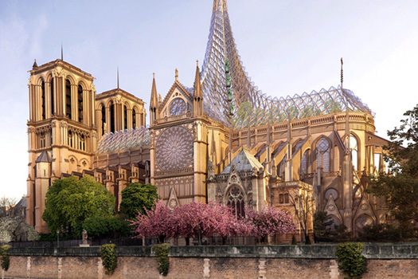

巴黎旅遊景點
艾菲爾鐵塔
<艾菲爾鐵塔>是位在法國巴黎戰神廣場的鐵製鏤空塔，世界著名建築，也是法國文化象徵之一，巴黎城市地標之一，巴黎最高建築物，得名自其設計師居斯塔夫·艾菲爾，屬於世界建築史上的技術傑作。艾菲爾鐵塔也是世界上最多人付費參觀的名勝古跡，2011年約有698萬人參觀，在2010年累計參觀人數已超過二億五千萬人。
- 地址： Champ de Mars, 5 Avenue Anatole France, 75007 Paris,France
- 建築高度： 324 公尺
- 竣工： 1887 年 1 月 28 日
- 落成： 1889 年 3 月 31 日
參考網站：艾菲爾鐵塔
羅浮宮
羅浮宮位於法國巴黎市中心的塞納河邊，原是法國的王宮，現在是羅浮宮博物館，擁有藝術收藏達3.5萬件，包括雕塑、繪畫、美術工藝及古代東方、古代埃及和古希臘羅馬等7個門類，主要收藏1860年以前的藝術作品與考古文物。
- 地址： 75001 Paris, France
- 創立： 1792 年
參考網站：羅浮宮
聖母院
巴黎聖母院是一座位於法國巴黎市中心西堤島上的天主教教堂，也是天主教巴黎總教區的主教座堂，約建造於1163年到1250年間，屬哥德式建築形式，是法蘭西島地區的哥德式教堂群裡面，非常具有關鍵代表意義的一座。
- 地址： 6 Parvis Notre-Dame - Place Jean-Paul II, 75004 Paris, France
- 竣工： 1163 年
- 建築高度： 96公尺
- 落成： 1345 年
- 開放時間： 07:45–18:45
- 用途： 主教座堂
官方網站：巴黎聖母院
凱旋門
巴黎凱旋門，即雄獅凱旋門，位於法國巴黎的戴高樂廣場中央，香榭麗舍大街的西端。是拿破崙為紀念1805年打敗俄奧聯軍的勝利，於1806年下令修建而成的。拿破崙被推翻後，凱旋門工程中途輟止。波旁王朝被推翻後又重新復工，到1836年終於全部竣工。
- 地址： Place Charles de Gaulle, 75008 Paris, 法國
- 建築高度： 50 公尺
- 竣工： 1806 年 8 月 15 日
- 落成： 1806 年